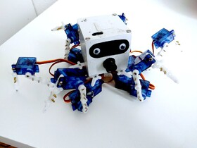

Posted in 2014
Published on 2014-12-29 in Henk the Hexapod.
Read more ...
Published on 2014-12-27 in Henk the Hexapod.
Read more ...
Scrapped. See Hexapod Henk MkII.

Read more ...
Cheap and simple tabletop quadruped robot controlled with Python.

Read more ...
The tinniest Arduino quadruped robot.

Read more ...